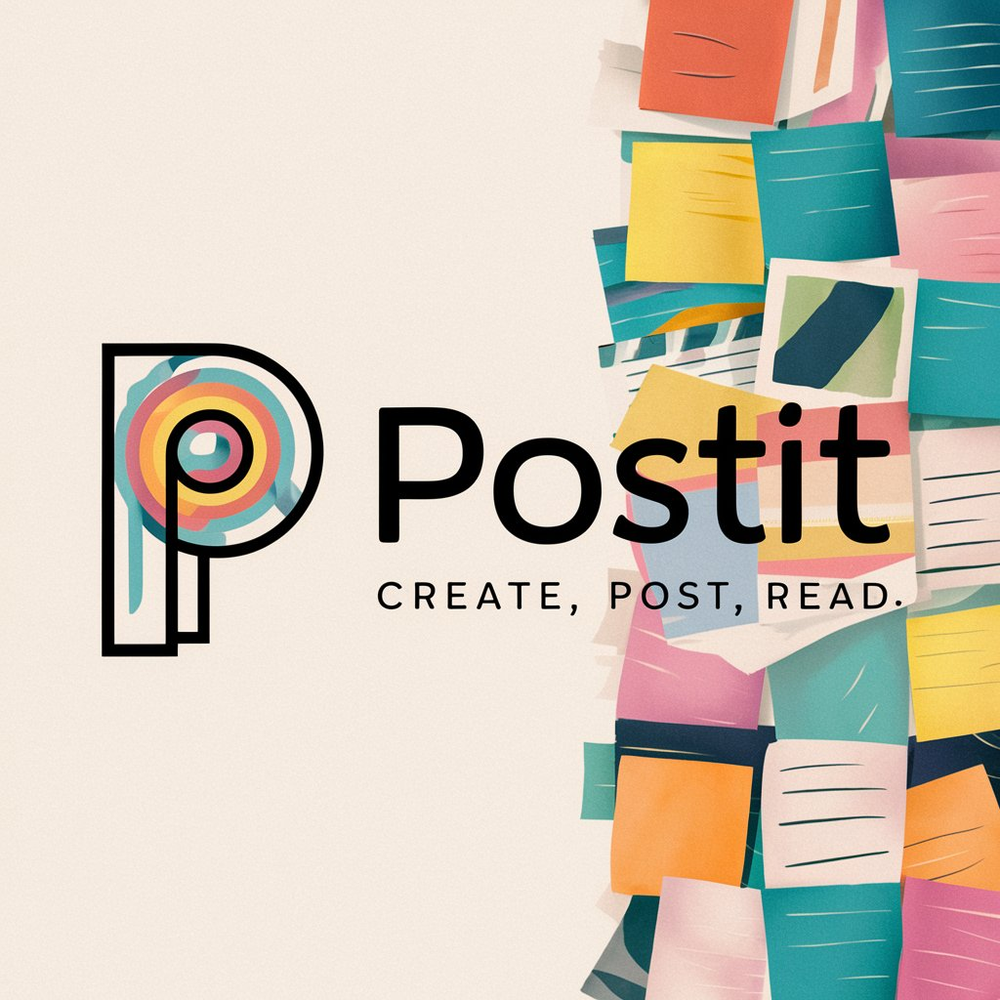

<%- include("header.ejs") %>
About Us

PostIT is a versatile and user-friendly blog website designed to provide a seamless platform for users to share their thoughts, stories, and ideas with the world. With PostIT, users can easily create, view, edit, and delete blog posts, making it an ideal solution for both casual bloggers and professional writers.
Key Features
-
Create Posts:
Effortlessly craft new blog posts with a rich text editor that supports various formatting options. Add titles, images, and content to share your stories and insights.
-
View Posts:
Browse through all the published posts in an organized and visually appealing layout. Each post can be viewed in detail, allowing readers to immerse themselves in the content.
-
Edit Posts:
Update your existing posts with ease. Whether you need to correct a typo, add more information, or completely revamp your content, the editing feature provides full flexibility.
-
Delete Posts:
Remove any posts that are no longer relevant or that you wish to retract. The delete function ensures that your blog remains up-to-date and clutter-free.
<%- include("footer.ejs") %>